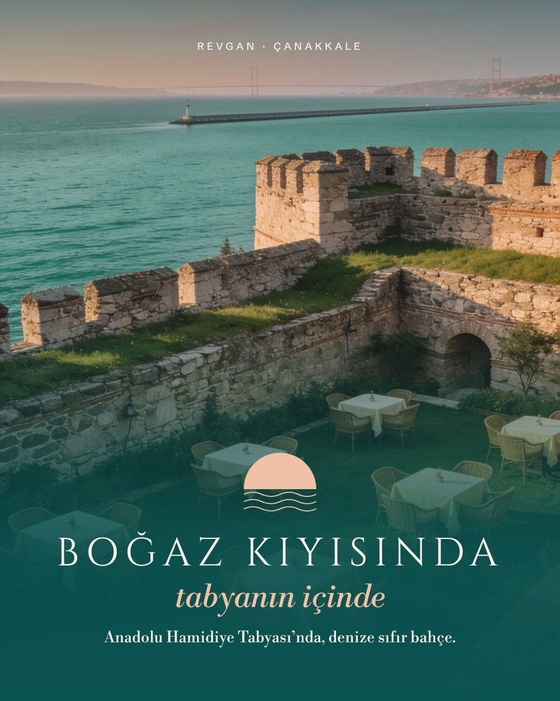
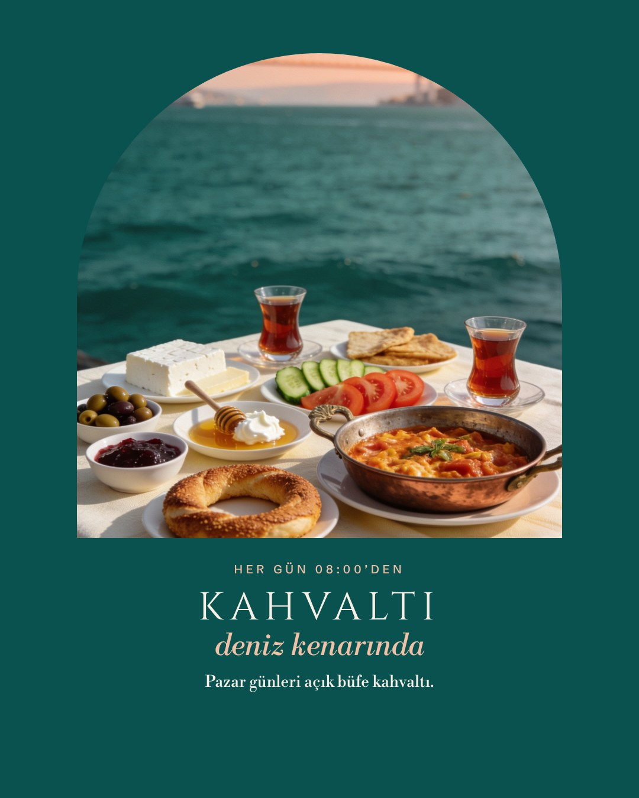
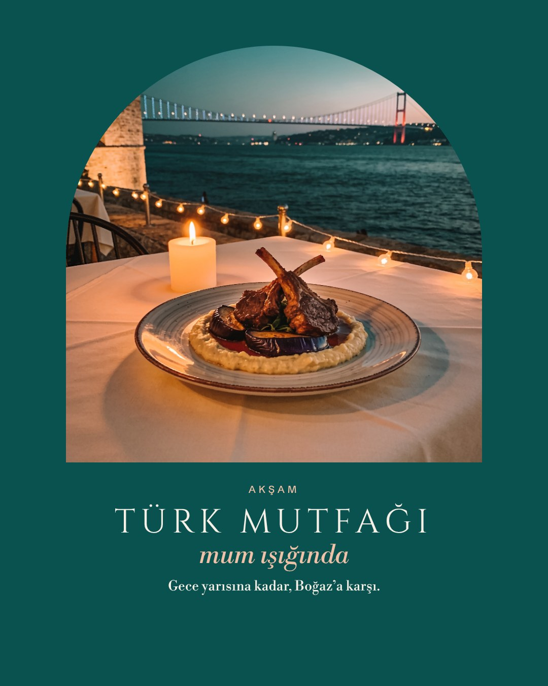
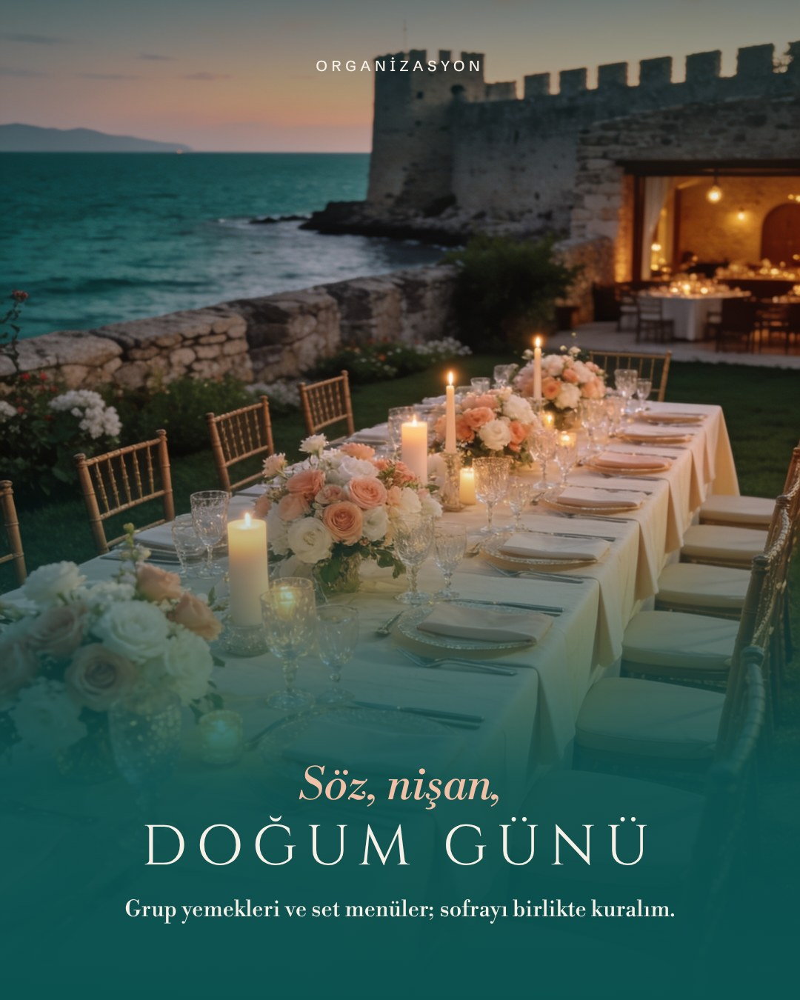
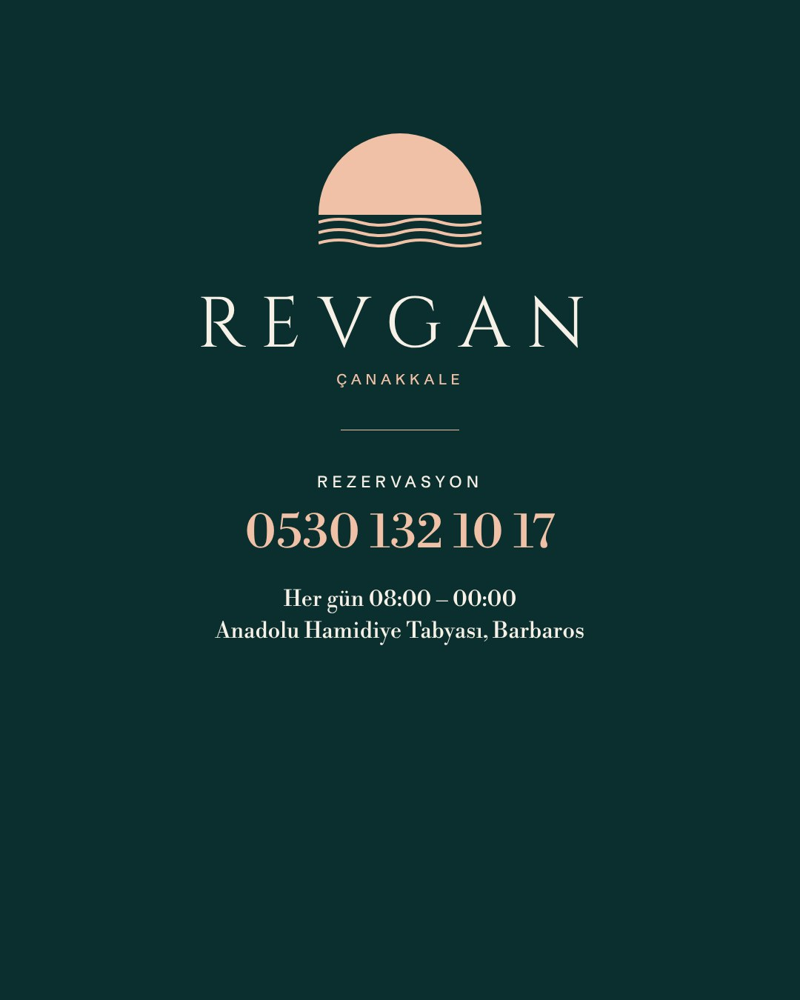
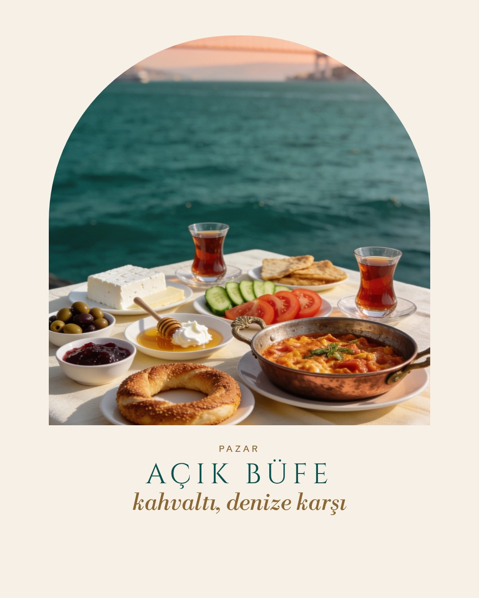

Örnek çalışma · Detay Multimedya
Revgan Çanakkale için örnek içerikler
Haftalık paylaşımların nasıl görüneceğini göstermek için hazırladığımız kısa bir reels, beş karelik bir karusel ve tek gönderi; logonuzdaki petrol yeşili, şeftali güneş ve dalgalarla.
Reels
Tabyadaki bahçe, deniz kenarında kahvaltı, akşam sofrası ve organizasyon; 5 sahnede Revgan. Video sessizdir; müzik Instagram’da paylaşırken eklenir.
Karusel





Tek gönderi

Saatler, Pazar açık büfe kahvaltı ve organizasyon bilgisi web sitenizden; telefon Google Haritalar kaydınızdan alındı.
Reels için müzik
Reels’i yüklerken Instagram’ın ses aramasına aşağıdakilerden birini yazın.
- Ud ve denizAramaya “oud instrumental calm” yazın. Tabya ve Boğaz’a yakışır.
- Sabah akustikAramaya “acoustic morning” yazın. Kahvaltı sahnesi için.
- Zarif piyanoAramaya “elegant piano” yazın. Organizasyon kareleri için.
Açıklama metinleri
Reels
Boğaz kıyısında, tabyanın içinde. 🌅 Kahvaltıdan akşam yemeğine, her gün 08:00 – 00:00. 📍 Anadolu Hamidiye Tabyası, Barbaros 📞 Rezervasyon: 0530 132 10 17 #Revgan #Çanakkale #kahvaltı #boğaz #tabya
Karusel
Revgan’da bir gün. 🌊 Sabah kahvaltı, akşam mum ışığında yemek, özel günlerde sofrayı birlikte kuralım. Pazar kahvaltısı için kaydet. 👇 📍 Anadolu Hamidiye Tabyası · Barbaros ⏰ Her gün 08:00 – 00:00 📞 0530 132 10 17 #Revgan #Çanakkale #çanakkalekahvaltı #nişanyemeği
Tek gönderi
Pazar günleri açık büfe kahvaltı, denize karşı. ☕️ Masanızı şimdiden ayırtın. 📞 0530 132 10 17 📍 Anadolu Hamidiye Tabyası #Revgan #pazarkahvaltısı #Çanakkale